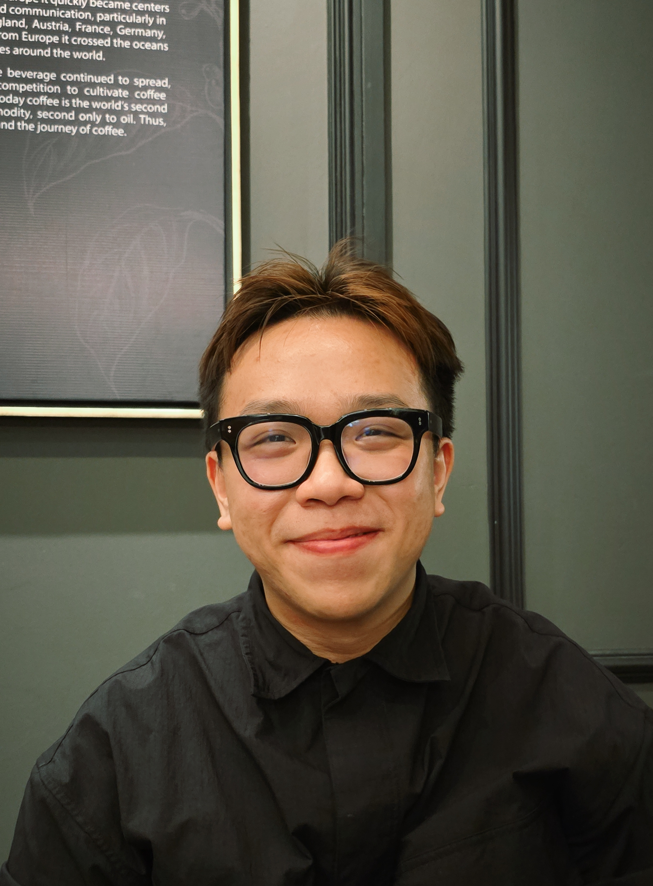

BSc Computer Science (Artificial Intelligence) · APU
Technology student with a culinary background, channeling precision and teamwork into AI, machine learning, and software development.
Skills
Projects
Work Experience
Education